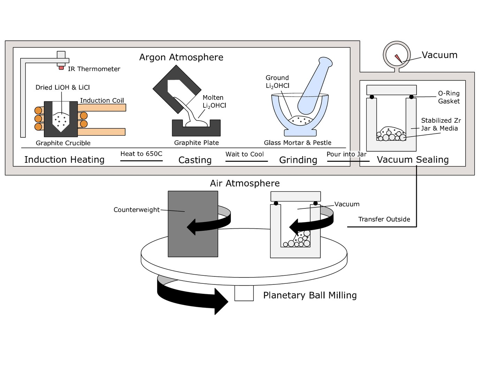
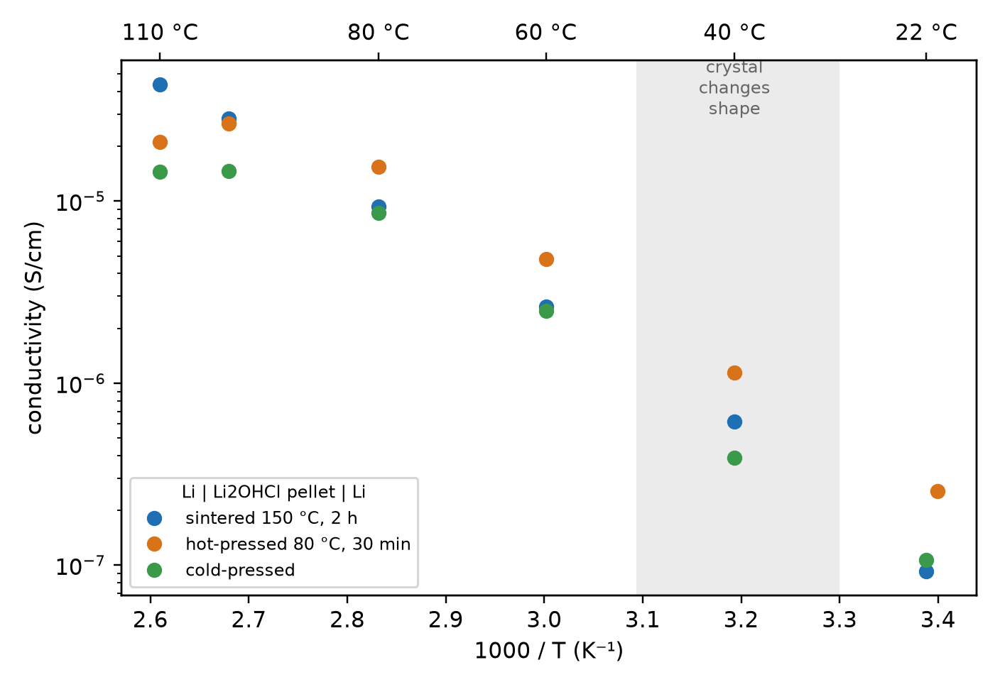

- I. Solid electrolyteMaking Li2OHCl from two salts
- II. Impedance spectroscopyUsing Nyquist plots to separate sources of resistance
- III. Porous cathodesMaking pores with a foaming agent
IMaking a solid electrolyte from two salts
Most lithium-ion batteries use a flammable liquid electrolyte. Solid electrolytes can reduce that hazard, but some take a long time to fire at high temperatures or require special presses to make dense pellets.
Li2OHCl can be made by melting lithium hydroxide and lithium chloride together and letting the melt cool. Both salts are inexpensive, and the resulting compound melts below 300 °C, which makes it possible to cast it (Song 2020). The powder can also be cold-pressed into pellets above 90% of theoretical density (Hood 2016).
Lithium ions move slowly through Li2OHCl at room temperature. Between about 35 and 60 °C, its crystal structure changes from orthorhombic to cubic, and its conductivity rises (Song 2018, Li 2016). Song measured more than 10−4 S/cm at 110 °C. The salts also pick up water from the air, which can change what forms during synthesis.
I worked with Ah-Young Song, whose research showed that rotating hydroxyl groups help lithium ions move through the crystal. I made the powder by induction-melting the salts in an argon glovebox, then casting and grinding the cooled material. I sealed the powder in a zirconia jar under vacuum and ball-milled it outside the glovebox. The new milling process increased conductivity about tenfold.

I prepared pellets from the milled powder by cold pressing, hot pressing at 80 °C or sintering at 150 °C. I placed each pellet between two lithium disks and measured its impedance from room temperature to 110 °C. I made these plots from the original 2020 data.

I tested Li2OHCl as a pressed pellet. In a related study, the group melted a version of the electrolyte into a finished electrode, where it filled pores much like a liquid electrolyte would. With Li1.9OHCl0.9 infiltrated at about 300 °C, a full cell retained over 80% of its capacity after 100 cycles and operated at 60 °C (Xiao 2021). The approach is relevant to my pellets because much of their resistance came from grain boundaries and electrode contacts.
IIUsing impedance to measure pellet resistance
The resistance of a pellet cell comes from several places. I wanted to separate the resistance inside the grains from the resistance at grain boundaries and at the two electrode contacts. A DC measurement combines them.
Impedance spectroscopy separates those contributions by their response to an AC voltage. I applied 100 to 500 mV and swept the frequency from 1 MHz down to 1 Hz. At each frequency I measured the current and its phase relative to the voltage to get the complex impedance Z = Z′ + jZ″. A Nyquist plot shows Z′ on the horizontal axis and −Z″ on the vertical axis, with one point per frequency. The curves here start at high frequency on the left.
A resistor and capacitor in parallel produce a semicircle on a Nyquist plot. Its width gives the resistance R, and its highest point occurs at f = 1/(2πRC). Two processes with similar resistances can therefore produce separate arcs if their capacitances are different enough. Capacitance also helps identify the source of an arc. In a 2021 class talk, I used a rule of thumb of about a picofarad for grain interiors and a nanofarad for grain boundaries. Electrode contacts can have larger capacitances and show diffusion.
Lithium disks let lithium ions cross the electrode–electrolyte interface, so the contact arc can return to the real axis at low frequency. Steel or gold disks block lithium ions. Charge builds up at the interface and the low-frequency curve rises almost vertically. You can switch between electrodes below.
modelMarkers show tenfold steps in frequency, from 1 MHz on the left to 0.1 Hz. The model combines a 200 Ω series resistor, a grain-boundary resistance in parallel with a CPE, and an electrode term. The grain-boundary element has an effective capacitance of 9 nF. Lower n to flatten its arc, or choose steel disks to see how blocking lithium changes the curve.
I measured the sintered pellet at six temperatures. At 60 °C and above, the large arc peaks at a few kilohertz. Its width and peak frequency give a capacitance of about 7 nF, consistent with grain boundaries. The smaller tail appears at tens of hertz and gives a capacitance in the microfarad range, consistent with the lithium contact. At room temperature the resistance is about a hundred times larger, and a small extra arc near 1 MHz likely comes from grain interiors.

To estimate each contribution, I fit a circuit with a series resistor R₀ and two resistor–CPE pairs, one for the grain boundaries and one for the contacts. The model fit the hot-pressed pellet data at 100 °C to within half a percent.

Using only R₀ gives a conductivity of at least 2.6 × 10−4 S/cm at 100 °C, in line with Song’s published values. Including grain boundaries brings the estimate to 6.4 × 10−5 S/cm. Including the lithium contacts gives 2.6 × 10−5 S/cm, as shown in the first plot. In this pellet cell, grain boundaries and contacts accounted for most of the resistance.
IIIMaking porous cathodes with foam
Many electric-car batteries use a cathode made from nickel-manganese-cobalt oxide (NMC) mixed with carbon and binder and coated onto aluminum foil. A thicker coating can store more energy per cell, but it also lengthens the path lithium ions have to travel. Diffusion time scales with the square of distance, so doubling the coating thickness can make ion transport take four times as long (Kim 2023).
I worked with Doyoub Kim, who used a laser to drill cone-shaped channels into finished electrodes. In his thesis, channels spaced 100 µm apart doubled the capacity of a thick cathode at a one-hour charge rate and quadrupled it at a 30-minute rate (Kim 2023). We wanted a simpler way to make pores that could scale up more easily.
I tried foaming the slurry with sodium lauryl sulfate (SLS), a foaming agent used in shampoos. I added SLS and a little water before mixing, then cast and dried the coating so the bubbles left pores behind. I varied the amount of SLS (0.4 or 0.75 g), mixing time (1 to 4 minutes), mixer speed (400 to 1600 rpm) and drying temperature (300 to 500 °C). I counted pores in electron micrographs with ImageJ and tested the coatings in half-cells. The best result used 0.75 g of SLS, mixed for 1 minute at 1200 rpm and dried at 300 °C.

Foaming added one step to mixing, but batches made with the same settings sometimes produced different pore sizes and performance. My next step would have been to adjust the ratio of NMC, carbon and binder to make the pores more consistent. I coauthored a later ECS abstract on scalable water-based processing for fast-charge electrodes.
Sources
- A.-Y. Song et al., Protons enhance conductivities in lithium halide hydroxide/lithium oxyhalide solid electrolytes by forming rotating hydroxy groups. Advanced Energy Materials 8, 1700971 (2018). doi
- A.-Y. Song et al., Understanding Li-ion dynamics in lithium hydroxychloride (Li2OHCl) solid state electrolyte via addressing the role of protons. Advanced Energy Materials 10, 1903480 (2020). doi
- Z. D. Hood et al., Li2OHCl crystalline electrolyte for stable metallic lithium anodes. Journal of the American Chemical Society 138, 1768 (2016). doi
- Y. Li et al., Fluorine-doped antiperovskite electrolyte for all-solid-state lithium-ion batteries. Angewandte Chemie 55, 9965 (2016). doi
- Y. Xiao et al., Electrolyte melt infiltration for scalable manufacturing of inorganic all-solid-state lithium-ion batteries. Nature Materials 20, 984 (2021). doi
- D. Kim, Enhancing ion transport in thick Li-ion battery electrodes by pore engineering. PhD thesis, Georgia Institute of Technology (2023).
- D. Kim, A. Magasinski, K. Hunady et al., Scalable aqueous battery electrode processing strategy to improve high C-rate capability of Li-ion battery electrodes. ECS Meeting Abstracts MA2023-01, 603 (2023). doi
- K. Hunady, The story of solid sulfide electrolytes viewed through impedance spectroscopy. Class talk, MSE 7140, Georgia Tech (Fall 2021).
- K. Hunady, Boosting Li-ion battery performance using shampoo. Talk, Yushin group, Georgia Tech (November 2021).